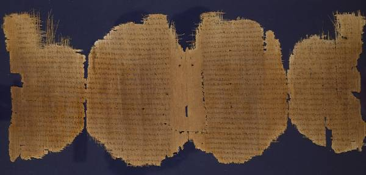

Chester Beatty Papyri

- Find Name
- Chester Beatty Papyri
- Historical Period
- Roman
- Artifact Date
- 2nd–3rd century AD
- Date Discovered
- 1930–1931
- Discovery Location
- Egypt (said to be from Aphroditopolis)
- Current Location
- Chester Beatty Library, Dublin
- Timeline Era
- Early Church
- Description
- A group of early New Testament papyri purchased by Alfred Chester Beatty in 1930–31, including P45 (Gospels and Acts, c. AD 250), P46 (Paul's letters, c. AD 200 — the oldest collection of Paul's epistles), and P47 (Revelation, 3rd century). They are among the earliest surviving copies of the New Testament books.
- Biblical Significance
- P46 gathers Paul's letters into a single book within about a hundred and fifty years of his death — Romans, Corinthians, Galatians, and the rest already traveling together as Scripture. The church did not wait centuries to treasure the apostles' writings; it copied, collected, and carried them while the ink of the originals was barely dry in living memory.
- Evidence Class
- Direct
- Interpretations
- Scholars agree the papyri are genuine second- to third-century New Testament copies; their exact Egyptian findspot is uncertain because they were purchased, not excavated.
- Scripture Illuminated
- Related Books
Awaiting Review Not yet checked against scholarly sources. Treat its claims as provisional until this entry is reviewed. About verification
Last reviewed: not yet reviewed